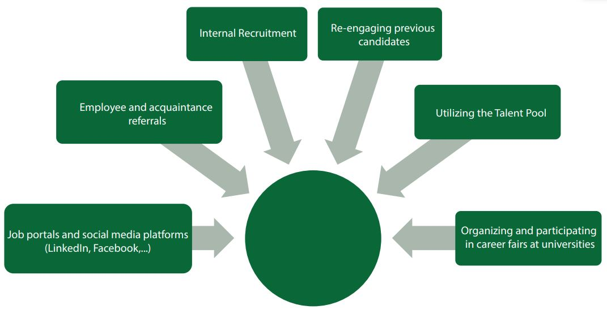
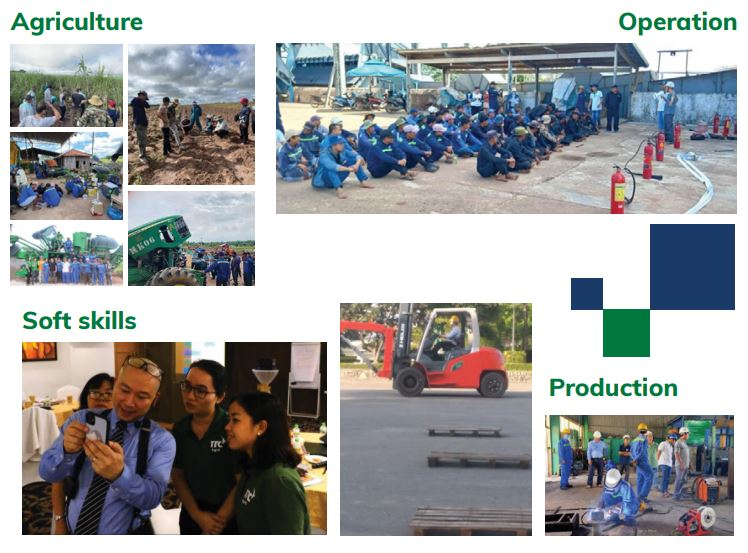
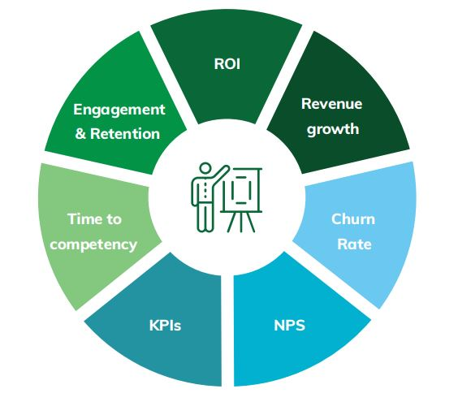

TTC AgriS is a leading force in sustainable agriculture in Vietnam, with a bold vision to become a top regional player by 2030. With core values rooted in efficiency, innovation, sustainability, and global integration, TTC AgriS is transforming the agricultural landscape through digital transformation, market expansion, and most importantly—people development. At the heart of this journey is a commitment to building not just a successful business, but a meaningful legacy for future generations.
In response to ambitious growth plans, TTC AgriS has strategically scaled its talent acquisition efforts. From 2024 to 2030, the company expects to recruit thousands of new employees. To meet this demand, TTC AgriS has developed strong talent pipelines through partnerships with 16 universities across Vietnam, Laos, and Cambodia, and actively participates in job fairs across the region.
The employer brand has gained significant recognition, with a growing online presence and enhanced onboarding programs, the company has steadily improved hiring success rates and employee retention, proving that when recruitment is guided by purpose and care, it becomes a powerful engine for transformation.


As a result, hiring efficiency improved year-over-year, while early retention and job satisfaction increased—proof that thoughtful recruitment fuels long-term success.

At TTC AgriS, learning is not a perk, it’s a pillar. Over 1,000 training programs have been rolled out, benefiting more than 25,000 participants. The launch of the LMS (Learning Management System) has revolutionized training delivery, enhancing accessibility and fostering a self-learning culture across all levels.
The company also emphasizes internal knowledge management, connecting people, processes, and technology to drive continuous improvement. With a robust competency framework, personalized development plans, and dynamic programs like coaching, rotation, and mentorship, TTC AgriS ensures every individual has the tools to thrive.
By focusing on real challenges, such as unproductive workloads, inefficient structures, and burnout the company is redesigning how work works, using technology, better planning, and smart talent strategy to unlock productivity and innovation.


TTC AgriS believes that sustainable agriculture starts with empowered people. Through visionary recruitment, impactful learning programs, and a culture that values both performance and wellbeing, the company is planting the seeds of lasting success.

In every field and every function, TTC AgriS is building a workforce not just for today, but for the future where people grow, and growth is human-centered. At TTC AgriS, people don’t just work—they learn, lead, and grow with purpose.

Tel: (028) 62682222 - EXT.122
(+84) 908 267 759
Email: clientsolution@anphabe.com
Follow us